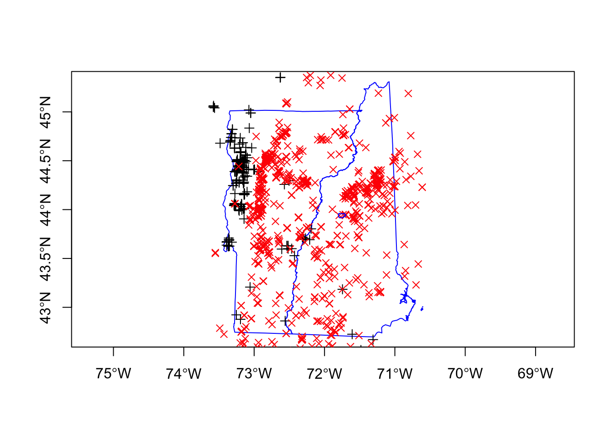

Chapter 3 Observation data
3.1 Set-up
This example will use the following libraries:
Load the shapefiles created earlier.
3.2 Download data
I will download occurrence data for Trillium grandiflorum and Trillium undulatum in my NHVT bounding box from the Global Biodiversity Information Facility. nrecs seems to be ignored. geo means only points with longitude and latitude. removeZeros means get rid of NA in location. ext is the bounding box to use.
First I set where I will save the file and check if it is already there. I do this because if I rerun this script, I don’t want to re-download. Note that GBIF data is updated weekly so using a time-stamp on your file might be good, but I am not doing that for this example.
Now I download if I haven’t downloaded already. The downloaded data has many columns that I don’t need. I will subset the following columns. select in the subset() call says what columns to use.
if (!file.exists(filePath)) {
# Download
grandiflorum <- dismo::gbif("Trillium", species = "grandiflorum",
nrecs = 300, geo = TRUE, removeZeros = TRUE, ext = NHVT)
undulatum <- dismo::gbif("Trillium", species = "undulatum",
nrecs = 300, geo = TRUE, removeZeros = TRUE, ext = NHVT)
trillium.raw <- rbind(grandiflorum, undulatum)
# select columns
colsWeNeed <- c("species", "lat", "lon", "locality", "year",
"coordinateUncertaintyInMeters", "occurrenceID", "occurrenceRemarks",
"geodeticDatum")
trillium.raw <- subset(trillium.raw, select = colsWeNeed)
save(trillium.raw, file = "data/trillium_presences.RData")
}Load in the presences data (saved from code above).
3.3 Check the coordinate projection
Check the projection to make sure it makes sense and there is only one value. Check that it is the same projection as my other layers.
[1] "WGS84"3.4 Make a sp object
trillium.raw is just a data frame. I make it a sp object (specifically a SpatialPointsDataFrame) using sp::coordinates() to specify which columns are the longitude and latitude.
Check that it looks ok and there are no NAs.
Min. 1st Qu. Median Mean 3rd Qu. Max.
-73.58 -73.04 -72.64 -72.44 -71.89 -70.61 Min. 1st Qu. Median Mean 3rd Qu. Max.
42.49 43.67 44.21 44.04 44.48 45.37 3.5 Check for inaccurate location data
The coordinateUncertaintyInMeters column give the uncertainty of the observation location. Some of the uncertainties are huge and I don’t want those.
(0,200] (200,500] (500,1e+03] (1e+03,2e+03] (2e+03,5e+03]
1230 81 39 48 60 I am going to keep only those locations with a location accuracy within 200m.
3.6 Plot
Now I can plot the occurrences points and add the NH and VT state boundaries. Trillium undulatum is much more common. Hubbard Brook is outlined in blue.
plot(nhvtshp, border = "blue", axes = TRUE)
plot(subset(trillium, species == "Trillium grandiflorum"), pch = 3,
cex = 1, add = TRUE)
plot(subset(trillium, species == "Trillium undulatum"), pch = 4,
cex = 1, col = "red", add = TRUE)
plot(hbshp, add = TRUE, border = "blue")
3.7 Save
I will save to the trillium file also. Later I will be subsetting and using a grid with pa=1 if trillium was observed in that grid cell so I want to name it to be clear that this is the original observance data.